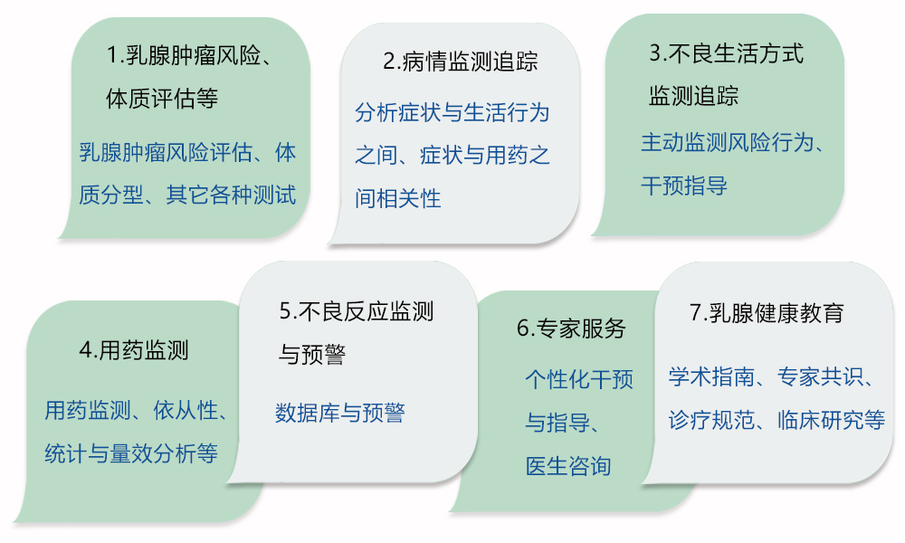
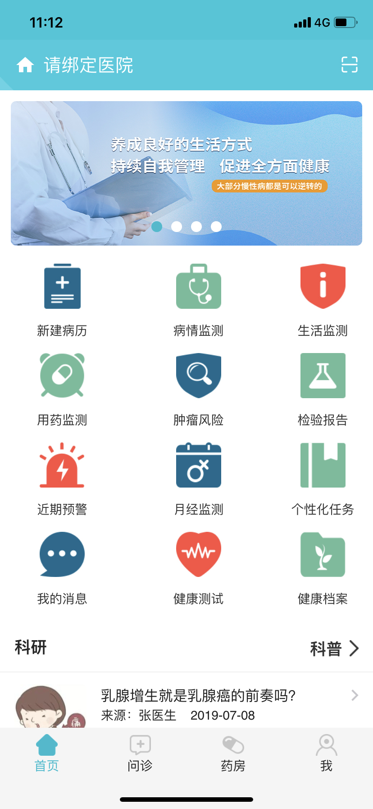
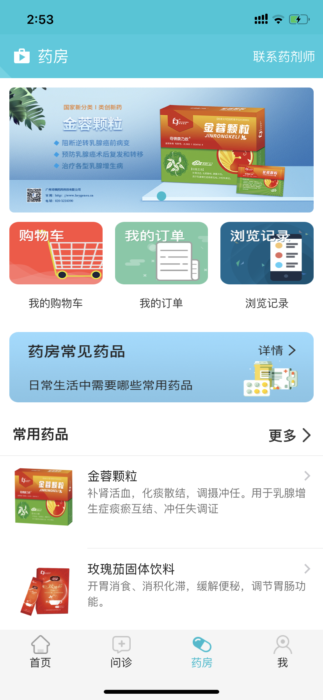
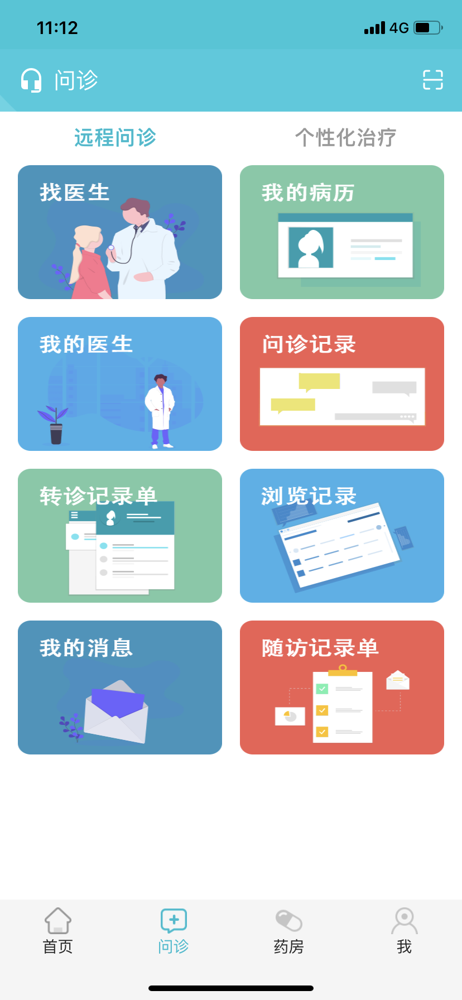
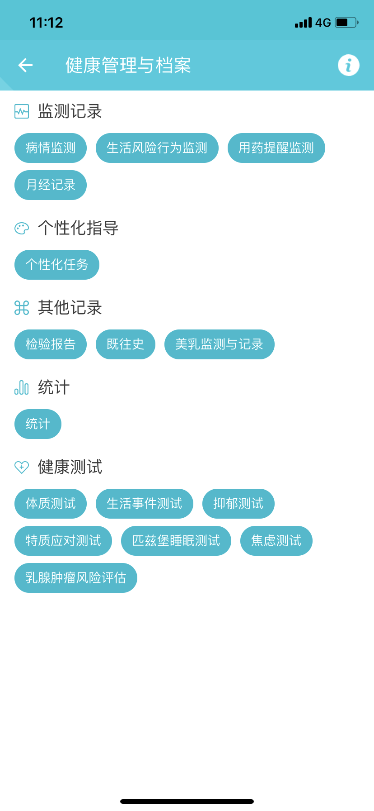
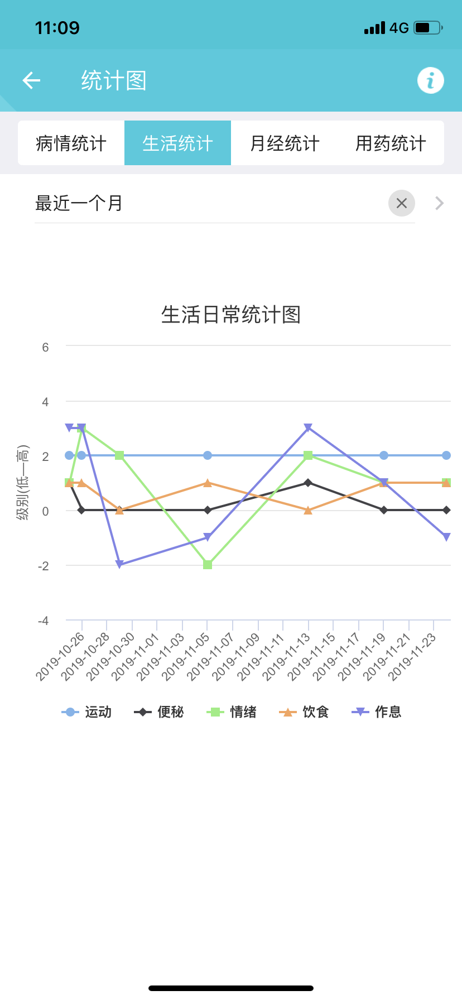
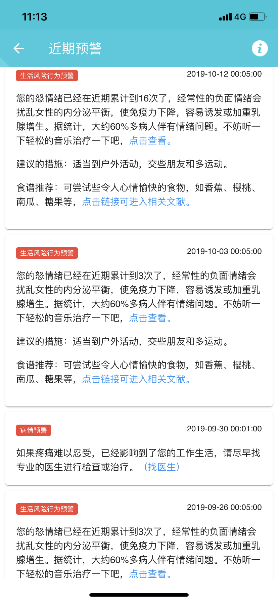
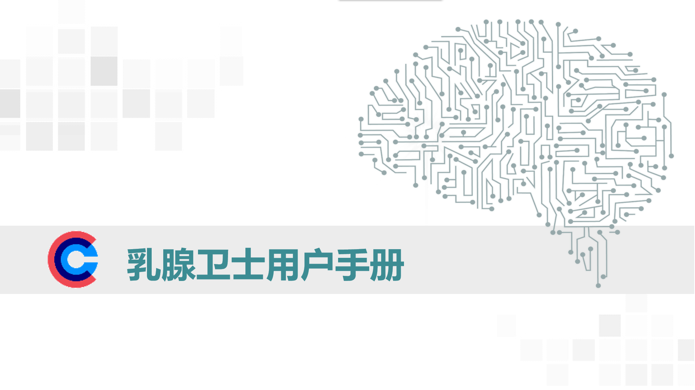

乳腺慢病监测智能管理研究平台针对女性乳腺慢性疾病，以临床经验为基础，以患者为中心，以促进患者的全面健康为目标， 是集乳腺慢病风险评估、监测、预警、术后康复等为一体的自我管理和辅助治疗平台。
7大主要功能——满足患者需要

乳腺卫士APP图


主要功能：
(1)提前一天在家里填写病历发送给医院，医院可以提前安排相关检查，减少二次排队现象，提高就诊效率。
(2)进行相关肿瘤风险评估以及相关的健康测试包括体质测试、睡眠测试、焦虑测试、抑郁测试、生活事件测试、特质应对测试等，评估自己的身体健康状况，根据建议自我管理自我调整生活方式。
(3)每天记录相关监测数据包括病情监测、月经监测、生活监测，系统将会自动反馈，引导您养成良好的生活方式，持续进行自我管理，促进全面健康发展。
(4)网上复诊和咨询，直接获得医生的调养建议或个性化指导，同时可使用医生开具的处方直接购药，节省看病。
(5)记录需要服用的药物，系统会根据设定的服药时间提前几分钟提醒您服药，同时会记录您服药的实际服用量，统计出相应的依从性供医生参考。
(6)服用药物时，如果有任何不舒服，可以在“用药反馈”窗口里提交， 将会有医生与您联系，快速获得医生的指导。
(7)系统将会根据您提交的各种数据，自动识别其中的风险并发送相应预警信息提醒您，以便您调整生活方式或找医生。
(8)获得各大医院专科医生提供的科研、科普知识，以及日常调养方法和居家治疗等方法，以便您更加科学地进行自我管理。
您下载乳腺卫士APP后，请按如下指引完成注册，同时需要花几分钟时间在首页中完善个人病情资料，包括以下：
第一步：新建病历
① 填写“新建病历”，请根据您的实际病情填写，包括“基本信息（要完成实名验证）、现病史、既往史、月经史”；
② 在“评测”里点击“更新评测”，先完成“体质、生活事件、抑郁、特质应对、睡眠、焦虑”6个测试，最后再完成“乳腺肿瘤风险评估”；
③ 同时在“检查报告”：一栏添加上传您1年内最近做的检查报告；
④ 参与赠药计划或检查报销方案的需要上传：用药一个标准疗程前、后的各种检查，包括乳腺彩超（和盆腔B超）、肝肾功能、血常规、尿常规+尿红细胞镜检的报告单，报告单需要完整（医院的原图整版）、清晰。需要保留相关的票据，疗程中历次处方单及购药明细单据。
⑤ 赠药计划指您购买金蓉颗粒多少盒赠多少盒，检查费用报销方案指您完成了上述在用药一个标准疗程的病情监测、记录时，我们可以根据发票为您报销上述检查类型的费用。
⑥ 上述内容均可参加积分计划，就是您使用APP时可以获取积分，如完成新建病历，病情、日常行为、用药监测等，积分可以兑换好物好礼。
您填写的病情资料越完善，医生对您的病情掌握得越全面，有利于医生给您提供更精准的分析建议，越有利于您病情的恢复。
第二步：平时居家期间：
1. 可以使用：病情监测、生活监测、用药监测、月经监测，如果有连续3次异常或者累计7次异常，系统将自动提醒您相应的注意事项，请在“近期预警”里查看；
2. 3-6个月左右，建议更新健康测试，包括”体质、生活事件、抑郁、特质应对、睡眠、焦虑“6个测试，最后再完成”乳腺肿瘤风险评估“；
3. 如果上述自助服务还未能帮助到您，建议您直接找医生或医生助手。
第三步：找医生（免费咨询）：
在“问诊”中点击打开“找医生”，点击右上角”搜索“按钮搜索“金蓉颗粒”专职医生或医生助手或您已经预约的医生，搜索到后点击医生简介，进入医生详情页面后点击“申请随访”，输入申请原因，等待医生回复。
（如果搜索不到，可以尝试筛选全国的医生，往下翻找该医生）
第四步：在线沟通
在线沟通：从“我的信息”里，点击“咨询信息”，进入咨询界面。您预约的医生或金蓉颗粒专职医生或医生助手同意您的随访后，系统自动把您的病历发送给医生，在24小时内他就可以查看您的病情信息了，您可以在线和他沟通。
第五步：咨询完成后，隐私保护的设置或开关
您可以在病历档案中设置病历隐私状态，或者在“我”的右上方点击“”，进入“设置”，再进入健康档案隐私设置，选择“问诊期间可见”状态即可。
第六步：医生回访
您开始使用金蓉颗粒之后，一段时间内“金蓉颗粒医学部”的医生或客服人员，将根据您使用的进度和情况，做一些必要的随访，主要是了解您用药和病情变化的情况。
第七步：投诉、建议：
投诉、建议的服务通道：
1. APP服务通道：从“我”，点击“意见反馈”，输入相关内容即可。
2. 服务中心联系电话：020-32210390（人工服务时间8：30 --12:00，14：00--18:00），或者使用留言功能，叙述事由、称呼和联系方式即可。
24小时内将会有客服专员联系您处理。
您的投诉、建议是我们把工作做得更好的动力，这些投诉、建议被采纳后将会有优惠券或小奖励。
一、 登入注册需要
1. 为何注册要手写签名？
答：表明您已阅读并认可了《用户服务协议》、《仟金方隐私权政策》、《互联网诊疗风险告知及知情同意书》。
2. 登入显示系统繁忙？
答：请检查网络是否通畅，最好退出后台，启动4G，重新登入。
3. 登入显示签名错误？
答：可能由于您的字迹不太端正，可重新书写后提交，或者检查下网络是否通畅。
4. 加载慢，无法登入？
答：（1）检查手机的网络情况，选择4G或者信号较好的wifi重新登录； （2）卸载APP后，重新下载APP再登录； （3）如无法解决问题，可联系客服020-32210390咨询。
5. 收不到验证码/验证码错误？
答：有可能短信被您的手机拦截软件归类到垃圾短信，可以去拦截软件设置里面看看，或确认一下手机号输入无误。
6. 如何绑定医院？
答：点击首页左上角的“请绑定医院”按钮→选择省份→选择城市→选择医院，点击“绑定”就可以进行绑定了。
7. 如何切换绑定其他医院？
答：点击首页左上角的绑定的医院→点击“修改”→选择省份→选择城市→选择需要重新绑定的医院，点击确定后成功修改绑定的医院。
8. 如何修改登入密码？
答：点击首页右下角的“我”→点击右上角的设置按钮→点击“账户与安全”→点击“修改登入密码”→按照页面提示输入绑定手机验证码和新密码→点击“修改”→提示修改密码成功。
9. 如何修改手机号码？
答：点击首页右下角的“我”→点击右上角的设置按钮→点击“账户与安全”→点击“修改手机号码”→输入新的手机号码→点击“获取验证码”→输入验证码→提示修改手机号码成功。
二、 问诊
1. 如何找医生问诊？
答：我们分两种情况：第一种是有目标医院或医生的，一种是目前还在寻找合适的医生。
第一种：明确治疗医院
答：（1）先绑定医院，确定自己所属的医院 （2）点击“问诊”→“找医生”，通过“疾病，职称，服务”等项目进行进一步筛选，找到自己想找的医生。
第二种：明确医院以及主治医生的
答： 点击“问诊”→“找医生”→点击右上角的放大镜符号→在方框中输入医生的名称
第三种：患者目前还在寻找合适的医生
答：（1）“问诊”→“找医生”→点击“全国→省市→城市”，选择目标城市→选择相应的医生 （2）选择医生时，需要关注所选医生的所在医院，职称，职务等相关信息，避免不必要的失误。
2. 提交了问诊，医生多久才能回复我？
答：我们使用的是一对一实时问诊形式，可能当前咨询用户较多，在人多的时候等待时间会比较长，或者医生可能正在做手术或开会等，无法及时回复您的问诊，麻烦您耐心等候。
3. 还没问诊完服务时间结束？
答：您好！图文咨询、电话的问诊时间是48小时，随访问诊时间是24小时，您尽量在问诊时间咨询医生，若超过时间系统自动结束问诊，您无法继续联系医生，若需联系则需重新购买订单。 如果您觉得问诊时间还是不够，请选择更长服务时间的个性化治疗服务。
4. 如何找到之前的咨询历史？
答：您可以在“问诊－问诊记录"里查看您所有的咨询记录。
5. 这次回复我的医生不错，下次怎么快速找到他？
答：您可以在医生详细资料页点击关注，就可以在“问诊”--“我的医生”找到
6. 如何向指定的医生咨询？
答：在“问诊”-"找医生"中输入关键字找到合适的医生，点击头像进入主页，选择"图文咨询"、"电话咨询"等进行购买，可能需要支付医生指定的费用。
7. 指定的医生没有回应我的图文/电话咨询怎么办？
答：如果医生评估了您的问题之后，发现与自己的擅长不符，或者医生当前时间紧张，暂时无法提供咨询，可能会将您的问题提交转诊，帮您（免费）转诊到更合适的医生；如果您不接受医生的转诊，您可以重新选择医生咨询，同时申请退款之前的订单。如果坚持希望选择当前医生咨询，请您调整问题描述，重新提交提问尝试，如有特殊情况请您联系客服寻求帮助。
8. 怎么使用医生的“医院看病”？
答：如果您挂号的医生已经入驻我们的平台，并且医生已开启该功能，您就可以利用您的挂号信息将新病历提前发送给医生，医生可能会根据病情、报告告知您需要提前做哪些检查或完善资料。
9. 问诊结束后如何删除我的病历？
答：您可以打开页面下方“问诊”→在右上角点击“我的病历”选择需要删除的病历档案中的病历→手指往左滑动病历→点击“删除”确认后即可删除该份病历。删除后的病历在回收站中可找到。
10. 如何恢复删除后的病历？
答：您可以打开页面下方“问诊”→在右上角点击“我的病历”→点击右下角的“回收站”→向左滑动对应的病历→点击“恢复”即可恢复删除后的病历。
11. 对医生回答不满意怎么办？
答：如果对医生解答存在疑问，在问题没关闭的情况下，建议优先向医生提出疑问，以便充分沟通。由于线上健康咨询是文字沟通，理解方面可能会有偏差，充分交流有助于减少沟通中的误解。 如是在无法良好交流，或问题已关闭，可向客服反馈。 同时在问诊订单中可对医生进行评价。
12. 为什么在乳腺卫士咨询，医生还会建议我去医院？
答：由于乳腺卫士提供的是健康咨询服务，网上咨询以文字交流为主，若您没提供相关辅助检查比如X线、彩照、钼靶等检查报告，医生无法仅通过网络、文字描述做出最终诊断。但是医生给出的建议，都是基于您的描述及提供的信息的基础上做出分析，您可以根据自身情况来决定是否采纳医生建议。 如病情需面诊或进一步相关检查来辅助判断，是需要到医院进行的，这也是医生和平台对您健康的负责态度，敬请谅解。
13. 平常有段时间有不舒服我该怎么办？
答：您可以点击“用药监测”→点击“用药反馈”，把您的不舒服相关症状反映给后台，我们乳腺卫士平台医生收到信息后会及时根据您的情况进行调查判断，如有必要医生可能会建议您暂停用药。
14. 关于申请随访
（1）患者需要申请随访该如何做？
答：找到需要申请随访的医生→详细填写申请随访的原因→医生会在第一时间查看并回复，如果还是拒绝，可能是医生认为您不适合或不需要随访；
（2）患者需要申请随访，医生并未开通“申请随访”的功能，该怎么办？
答：您可以通过找医生，购买医生的相关服务后，医生和您进行在线的一个随访交流，避免您长时间等待。
（3）医生申请随访，患者该如何查看消息，以及如何作出回复；
答：您可以点击首页“问诊”→“我的消息”→“系统消息”→点击“同意”后表示您同意了医生的随访申请，可在线和医生进行交流沟通。
15. 订单是否可以删除？
答：未完成支付的订单可以删除，其他类型订单暂未实现该功能，如给您带来不便，敬请谅解。
16. 可以医保支付医疗服务、药品订单吗？
答：暂未开通服务，如给您带来不便，敬请谅解。
17. 可以和家人共用一个账号吗？
答：健康档案和病历都是关联到您个人，请勿随意变更，建议您为家人设置另一个单独的账号。
18. 优惠券如何使用？
答：在下订单时，系统自动筛选可用的优惠券。
19. 优惠券怎么没到账？
答：抢到优惠券后，可打开乳腺卫士App，点击我-【我的优惠券】查看是否到账。您也可在领券页面核实是否领取成功，是否提示到账时间。 如未收到，是由于网络延迟造成的，建议您稍后再查询。
20. 如何支付订单？
答：平台使用支付宝或微信支付。
21. 如何查询积分规定？
答：可打开乳腺卫士App，点击我-【我的积分】-【积分规则】查看。
22. 问诊的医生是如何定价的？
答：根据不同的问诊类型、医院等级、医生职称等因素定价有所不同，具体医生的定价请在医生主页查看。
三、 处方
1. 结束问诊后，如何翻查医生所给的处方？
答：点击菜单栏右下角“我”→点击“我的处方”，即可查看历史处方信息。
2. 如何在线进行购买处方药物？
答：（1）根据《互联网医院管理办法》，购买处方药需要医生开具的处方单方可购买，您可以购买医生的服务后，医生给您开具处方，您点击我的消息进入医生界面可以查看医生开具的处方，点击购买就可以直接购买处方药品啦。 （2）或者您可以直接点击“我”→点击“我的处方”→点击相应的处方→在最下面左下角点击“上传处方”→上传您在医院医生为您开具的处方就可以直接在商城购买处方药了。
四、 用药
1. 如何设置用药提醒？
答：（1）点击菜单栏中“首页”→点击“用药监测”→选择日期→点击“新增提醒”，根据医生开具的处方信息自主填写。 （2）或者找到“我的处方”→点击处方中的“添加用药提醒”→设置相应的提醒时间即可。
2. 用药监测中出现黄色感叹号是怎么回事？
答：黄色感叹号指该药品属于麻醉药品、精神药品、医疗用毒性药品、放射药品、易制毒化学品等，需要格外关注，请在医师或药师指导下使用。如果您在服药过程中有其他情况，在用药反馈处留言反馈给平台医生，医生收到后会尽快联系您。
3. 药品服用后出现不适或疑问，如何处理？
答：您可以点击“用药监测”→点击“用药反馈”，把您的不适反馈给平台医生，平台医生收到信息后会及时联系你，进行查询判定，予以相关处理。
五、 退款
1. 什么情况下可退款吗？
答：付费问题在医生首句回复之前，您可以随时申请退款，进行退款操作；咨询中的问题，医生已回复且正常提供服务的情况下，不支持退款；药品退款问题：在药品发货之前，您可以随时申请退款，进行退款操作；如遇到特殊情况可联系客服寻求帮助。
2. 如何申请退款？
答：您好，您可以点击首页的右下角的“我”→点击“我的订单”→点击“订单详情”进入退款页面，滑动页面至底部，点击“申请退款”，等待客服审核通过后，一般1-3个工作日后退款到账，注意及时查看，根据您的付款方式选择查看对应的支付宝或微信退款记录。
六、 隐私安全
1. 在乳腺卫士咨询，个人信息是否安全？
答：您在乳腺卫士的注册信息、个人账号都是保密的，请您放心！我们采取了严格的安全等级防护措施对您的隐私进行保护，如实名认证之后，我们在平台中所有会出现您身份证信息的地方（包活病例、处方、档案）都进行了密文处理。 （1）病历档案：您可以打开“问诊”中的“我的病历”，点击病历档案中的设置把您的病例信息设置为“当前医生可见”，其他医生无权访问您的病例信息； （2）健康档案：您可以打开“我”的，点击右上角的设置符号“”，把健康档案隐私设置为“在问诊期间可见”，问诊结束后医生无法查看您的档案资料。 不过需要提示您，请您在咨询过程中不要将个人手机号码、微信等联系方式告知医生，如您脱离乳腺卫士平台与医生私下联络，本平台将无法保护您的权益。
2. 回复问题的医生是不是真正的医生？
答：您可以放心，乳腺卫士平台的医生都是正规医院的真实医生，加入平台之前需要通过专业的身份和资质审核，审核通过之后才可能加入这个平台，医生主页也会显示医生的介绍信息，供您查看参考。

点击查看详情 ：乳腺卫士APP用户手册